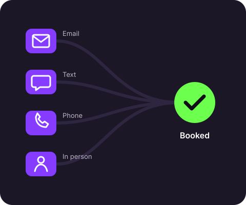

Follow-up frameworks you can copy
Pick the channel that fits you and your customers. Each framework tells you when to reach out, what to say, and when to stop, so you never have to guess.
How to use these frameworks
Every framework below follows the same three rules. Once you get these down, you can follow up on any channel without feeling awkward.
- Give a reason. Every message should remind the person why they reached out, or give them something useful. Never send "just checking in" with nothing else.
- Make replying easy. End with one simple question they can answer in a few words, like "Does Thursday or Friday work better?"
- Know when to stop. Plan your last message ahead of time. A polite final message often gets the most replies.

Email follow-up
Best for: quotes, proposals, and anyone who asked for more information.
- Day 1 Send a short thank-you within an hour. Recap what they asked for and attach anything you promised.
- Day 3 Follow up with one helpful detail they didn't have yet, like a photo of past work or an answer to a common question.
- Day 7 Ask a simple either-or question to move things forward.
- Day 14 Send a polite last message that leaves the door open.
Example: Day 3 email
Subject: Your quote, plus one quick idea
Hi Maria, thanks again for asking about weekly cleaning. A lot of my customers start with every other week to see if it's a good fit, so I added that price to your quote too. Would you like to try one visit this month or next?
Text message follow-up
Best for: appointments, local services, and customers you have already met.
- Day 1 Text the same day you meet or talk. Use their name and mention something specific.
- Day 3 Offer two specific times instead of asking "when are you free?"
- Day 7 Send your last check-in for now, and ask if you should reach out next month instead.
Example: Day 3 text
Hey Jordan, it's Aaron from the shop. I've still got a 10am and a 2pm open this Saturday. Want me to hold one for you?
Phone call follow-up
Best for: bigger purchases and leads who went quiet after showing real interest.
- Opener Say who you are and why you're calling in the first ten seconds: "Hey Chris, it's Aaron. You asked about personal training last week, and I wanted to see if you still had questions."
- Voicemail Keep it under 20 seconds. Leave your name, your reason, and your number twice, then send a text right after so they can reply without calling.
- Call back Wait two or three days, then try a different time of day than your first call.
Example: voicemail
Hey Chris, it's Aaron with Peak Training. You asked about our starter package, and I have two spots open next week. Call or text me at 555-0142. Again, that's 555-0142. Talk soon.
In-person follow-up
Best for: barbers, salons, trainers, and any business where customers walk through your door.
- Before they leave Book the next visit at checkout. "Want me to put you down for the same time in three weeks?" is the easiest follow-up there is.
- Write it down Note one personal detail, like a trip or a new job, in your phone or CRM so you can ask about it next time.
- Next visit Bring up that detail right away. Customers come back to places that remember them.
Example: at checkout
You're all set. Your fade usually grows out in about three weeks, so want me to save you a spot on the 24th? I'll text you a reminder the day before.
Download the templates
Get every example message from this page in one plain text file. Copy them into your phone, email, or CRM and swap in your own details.
Download the template pack